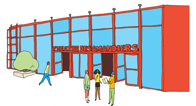
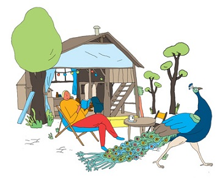

Articles faciles à lire et à comprendre
L’abbaye de Royaumont nous ouvre ses portes

L’abbaye de Royaumont se trouve à Asnières-sur-Oise dans le Val-d’Oise (95).
Une abbaye est un ensemble de bâtiments occupé par des religieux.
L’abbaye de Royaumont reçoit des chanteurs, des musiciens et des danseurs.
Cette abbaye propose dès le mois de juin des animations.
L’orgue de Royaumont démarre les festivités.
Vous pouvez écouter de la musique classique, du rap, du jazz, du slam.
Le slam est de la poésie récitée sur un rythme marqué.
Vous pouvez écouter aussi de la musique indienne et iranienne.
Beaucoup d’artistes jouent des musiques nouvelles.
Ils font des expériences ensemble.
Vous trouverez des informations sur le site internet www.royaumont.com
Les ESAT D’AVENIR APEI ont transcrit et validé en FALC cet article
Transcrit par l’ESAT La Roseraie et validé par l’ESAT Les Courlis
Photo de l’abbaye de Royaumont prise par Jérôme Johnson
Vous jetez un peu moins

En 2013, chaque habitant de la région d’Île-de-France a jeté environ 462 kilos de déchets.
Vous jetez moins qu’en 2000 car :
- Vous compostez,
- Vous utilisez un objet plusieurs fois,
- Vous jetez moins d’aliments.
Les poubelles en Île-de-France sont moins pleines qu’avant.
Le compostage permet de produire du fumier et de l’engrais à partir des épluchures.
Vous trouverez des informations sur le site internet www.iledefrance.fr
Les ESAT D’AVENIR APEI ont transcrit et validé en FALC cet article
Transcrit par l’ESAT La Roseraie et validé par l’ESAT Les Courlis
Des violences bien réelles sur internet
Vos amis sur internet peuvent devenir vos ennemis.
Vous ne pouvez pas contrôler les insultes, les menaces et le harcèlement sur internet.
Des jeunes filles sont victimes de harcèlements graves.
Elles ne sont pas conscientes du danger.
Le harcèlement est une agression morale ou physique régulière.
Le centre Hubertine-Auclert est là pour les aider à se protéger de ce harcèlement.
Hubertine Auclert vivait il y a longtemps.
Elle était journaliste.
Elle voulait que les femmes soient égales aux hommes.
La Région Île-de-France a créé le Centre Hubertine-Auclert pour soutenir les projets des femmes.
Vous trouverez des informations sur le site internet www.centre-hubertine-auclert.fr
Une promenade dans le port de Gennevilliers

Le port de Gennevilliers se trouve sur la Seine dans le département des Hauts-de-Seine (92).
C'est le plus grand port de France situé sur un fleuve.
Vous pouvez le visiter à bord d’un bateau.
Les visiteurs ont du mal à trouver le chemin du port.
Il manque des panneaux pour indiquer le chemin.
Le bateau part souvent en retard.
Le bateau s’appelle le Tivano.
Le port de Gennevilliers a 6 très grands bassins.
Il y a plein d’entreprises spécialisées autour des bassins.
Des milliers de personnes travaillent dans le port.
Il y a le premier transporteur français.
Il y a des millions de marchandises dans le port chaque année.
Vous pouvez voir les énormes caisses utilisées pour transporter les marchandises.
Ces caisses s'appellent des containers et elles sont de toutes les couleurs.
Le bateau navigue le long de tas de charbon, de ferraille et de gravats.
Il faudrait planter des arbres pour cacher tout cela.
Henri Quarré se trouve sur le bateau.
Henri Quarré est responsable d’une association de retraités du Parisis dans le Val-d’Oise (95).
Il accompagne 25 retraités.
Chaque retraité a payé 6 euros pour la croisière.
La promenade est très agréable.
Un artiste pourrait peindre les couleurs du port sur un tableau.
Le bateau rentre au port après 1 heure 30 de croisière.
Vous trouverez des informations sur le site internet www.tourisme92.com
Les ESAT D’AVENIR APEI ont transcrit et validé en FALC cet article
Transcrit par l’ESAT La Roseraie et validé par l’ESAT Les Courlis
Photo du bateau Tivano prise dans le port de Gennevilliers par Marie Genel de l’agence Picturetank
Un point de vue sur l’innovation

Innover, c’est inventer, apporter une nouveauté, un nouveau produit.
L’innovation est présente tous les jours chez les habitants d’Île-de-France.
Éric Scherer est un journaliste spécialisé dans l’innovation.
Il va vous donner son point de vue.
Pour Éric Scherer, innover veut dire :
- Entreprendre,
- Changer le monde,
- Améliorer la vie.
Internet et les réseaux sociaux contiennent beaucoup d’informations.
On les appelle les données massives.
Internet et les réseaux sociaux sont un outil puissant.
Cet outil change votre vie tous les jours.
Mais cette nouvelle technologie peut être dangereuse.
Les utilisateurs d’Internet sont surveillés.
Des pays et des grandes entreprises d’internet peuvent voir toutes les données.
Beaucoup d’actions développent l’innovation en Île-de-France :
- Pour échanger leurs connaissances,
- Pour former des personnes qui n’ont pas fait d’études,
- Pour aider les personnes qui ont de bonnes idées neuves.
Les nouvelles technologies sont très présentes dans les entreprises.
Selon Eric Scherer, toutes les écoles doivent utiliser le numérique.
Les élèves doivent apprendre à se servir d’internet.
Même les tout petits élèves doivent être à l’aise avec l’informatique.
Grâce à l’innovation, le mode de vie a changé.
Des jeunes créent des entreprises.
Ils savent bien vivre ensemble.
Ils sont ouverts au monde et intéressés par l’environnement.
Les ESAT D’AVENIR APEI ont transcrit et validé en FALC cet article
Transcrit par l’ESAT La Roseraie et validé par l’ESAT Les Courlis
Photo d’une personne costumée en cosmonaute prise dans un quartier pavillonnaire d’Athis-Mons par Philippe Lesprit de l’agence Picturetank
Parlons du climat
La COP 21 est une réunion de presque tous les pays du monde.
On appelle cette réunion une conférence.
La COP 21 aura lieu en décembre 2015 au Bourget en Seine-Saint-Denis (93).
Les représentants des pays vont parler du changement climatique.
La Région Île-de-France va donner 2 millions d’euros aux associations pour leurs projets sur le climat.
Ces projets sont nombreux. Par exemple :
- Des lycéens imaginent les débats possibles sur le climat.
- La Coalition climat 21 rassemble des associations de citoyens du monde entier.
Elle veut impliquer les citoyens sur le changement de climat dans leur vie quotidienne.
- Les universités vont proposer des formations à l’écologie.
- Une pièce de théâtre propose un débat sur l’environnement.
- L’institut spécialisé dans l’aménagement de l’Île-de-France prépare une carte animée du changement de climat.
Le numérique regroupe différentes technologies

Futur en Seine est un grand festival consacré au numérique.
Le numérique regroupe différentes nouvelles technologies comme :
- Internet mobile,
- Les objets connectés,
- L’impression 3D.
Le festival a eu lieu cette année du 11 au 21 juin.
Le festival a abordé deux thèmes :
- Le climat,
- L’innovation numérique.
Mais il faut faire attention au numérique.
La grande consommation d’énergie et les déchets du matériel informatique ont des mauvais effets sur le climat.
L’innovation numérique pose des questions sur :
- La politique,
- Les citoyens,
- Les entreprises.
Le festival a accueilli des intellectuels et des grands patrons pour répondre aux questions.
Futur en Seine a proposé des conférences et des concerts.
Vous trouverez des informations sur le site internet www.futur-en-seine.fr
Les ESAT D’AVENIR APEI ont transcrit et validé en FALC cet article
Transcrit par l’ESAT La Roseraie et validé par l’ESAT Les Courlis
Photo d’un robot présenté lors du festival Futur en Seine (vous trouverez des informations sur ce robot sur le site www.futur-en-seine.fr
Une école pour les patrons étrangers

20 candidats étrangers viennent d’entrer à l’École régionale des projets pour apprendre à créer une entreprise.

L’école se trouve à Paris (19e arrondissement).
L’école propose cette formation pour la première fois.
Près de la moitié des étrangers en France vivent en Île-de-France.
Les étrangers ont des difficultés à trouver du travail.
Les étrangers ont besoin de maîtriser la langue française et de comprendre le monde du travail en France.
La formation dure 6 mois.
Les élèves apprennent à créer leur emploi.
Ils sont accompagnés par des patrons d’entreprise.
Plus de la moitié des élèves sont des femmes.
La moyenne d’âge est de 42 ans.
Les patrons étrangers souhaitent rester en contact avec leur pays.
Ils veulent travailler dans :
- Le commerce international,
- La transformation de textile,
- Le commerce de produits bio.
Vous trouverez des informations sur le site internet grdr.org
Les ESAT D’AVENIR APEI ont transcrit et validé en FALC cet article
Transcrit par l’ESAT La Roseraie et validé par l’ESAT Les Courlis
Photo de Jonathan Stebig prise par Julie Bourges de l’agence Picturetank (Jonathan Stebig travaille à l’École régionale des projets)
À l’école de Fleury-Mérogis
Depuis 2 ans, la Région Île-de-France aide les prisonniers à faire des études.
Cela les aidera à trouver un travail en sortant de prison.
La prison de Fleury-Mérogis dans l'Essonne (91) s’associe avec des universités d’Île-de-France.
La Région donne de l’argent aux prisonniers pour faire des études.
Elle finance aussi :
- L’achat de livres,
- L’achat d’ordinateurs.
Grâce à cette aide, beaucoup de prisonniers obtiennent leur diplôme.
Vous trouverez des informations sur le site internet www.iledefrance.fr
Les ESAT D’AVENIR APEI ont transcrit et validé en FALC cet article
Transcrit par l’ESAT La Roseraie et validé par l’ESAT Les Courlis
Photo d’un homme devant un tableau prise par Bruno Fert de l’agence Picturetank
La musique classique à la portée de tous

L’association Les Concerts de poche organise de beaux concerts de musique classique dans les villages et les cités.
L’association veut faire connaître la musique classique à tous les publics.
La directrice de l’association s’appelle Gisèle Magnan.
Des artistes connus dans le monde entier participent aux concerts et aux ateliers de l’association.
L’association organise des ateliers de musique pour :
- Des enfants,
- Des adolescents,
- Des personnes en situation de handicap,
- Des personnes en situation de pauvreté.
L’association a 10 ans cette année.
En 2014, le projet de l’association est reconnu utile pour la société.
C’est une première pour une association culturelle.
Vous trouverez des informations sur le site internet www.concertsdepoche.fr
Les ESAT D’AVENIR APEI ont transcrit et validé en FALC cet article
Transcrit par l’ESAT La Roseraie et validé par l’ESAT Les Courlis
Photo d’un concert fournie par l’association Les Concerts de poche
Les fermes en ville

L’agriculture est possible en ville.
Une expérience des Fermes en ville se déroule à Saint-Cyr-L’Ecole dans les Yvelines (78).
L’expérience consiste à tester différents modes de cultures en ville.
D’habitude, on a du mal à faire pousser des fruits et légumes en ville.
Nicolas Brulard est agriculteur et économiste aux Jardins de Gally.
Un économiste est un spécialiste de science économique.
L’économie, c’est l’ensemble des activités d'une collectivité humaine :
- La production,
- La distribution,
- La consommation.
Nicolas Brulard a le projet d’installer des fermes en centre-ville.
Pour Nicolas Brulard, les tomates et les fraises peuvent pousser en centre-ville.
Le projet permet de rapprocher les cultures des consommateurs.
Le projet permet d’éviter de transporter des fruits et des légumes sur de longues distances.
Nicolas Brulard veut louer des terrains aux habitants de la ville.
Les habitants de la ville peuvent cultiver leurs fruits et leurs légumes sur les terrains.
Vous trouverez des informations sur le site internet www.lesfermesenvilles.com/
Les ESAT D’AVENIR APEI ont transcrit et validé en FALC cet article
Transcrit par l’ESAT La Roseraie et validé par l’ESAT Les Courlis
Photo de Nicolas Brulard prise par Rafaël Trapet de l’agence Picturetank
Les petites pièces de monnaie sont utiles

Benjamin Dupays est le fondateur de l'entreprise Centimeo.
L'entreprise Centimeo fabrique un distributeur de friandises à bas prix.
Ce distributeur n’accepte que les pièces rouges :
- 1 centime,
- 2 centimes,
- 5 centimes.
Centimeo peut stocker beaucoup de friandises.
Il y a 250 distributeurs en Île-de-France.
Grâce à ces distributeurs, vous pouvez acheter :
- Un carré de chocolat ou de nougat,
- Un cookie,
- Un chewing-gum,
- Une dose de gel antibactérien.
Le prix va de 5 centimes à 20 centimes
L’entreprise de Benjamin Dupays se trouve à Bobigny en Seine-Saint-Denis (93).
L’entreprise fait travailler 8 personnes.
L’objectif de Benjamin Dupays est d’installer plus de distributeurs en France et aussi en Europe.
En 2015, il y aura peut-être 500 machines installées.
Vous trouverez des informations sur le site internet www.centimeo.fr
Les ESAT D’AVENIR APEI ont transcrit et validé en FALC cet article
Transcrit par l’ESAT La Roseraie et validé par l’ESAT Les Courlis
Photo de Rodolphe Mas et du distributeur de friandises Centimeo prise par Florence Joubert de l’agence Picturetank (Rodolphe Mas travaille à Centimeo)
Préparation des Jeux olympiques de 2024

Les Jeux olympiques et paralympiques ont lieu en 2024.
Les Jeux paralympiques sont des Jeux olympiques réservés aux personnes handicapées physiques.
Les villes ont jusqu’au 15 septembre pour proposer un projet pour les organiser.
Tony Estanguet a été 3 fois champion olympique de canoë.
Tony Estanguet représente la candidature de Paris et de l'Île-de-France.
Claire Peuvergne dirige l’Institut régional de développement du sport.
Tony Estanguet et Claire Peuvergne réfléchissent sur les Jeux olympiques et paralympiques.
Pourquoi le sport à pris une grande place dans la vie de tous les jours ?
Claire Peuvergne dit qu’il y a longtemps la France a construit des équipements sportifs.
Les équipements sportifs sont par exemple des gymnases, des stades et des piscines.
Ils ont été construits pour que le sport à l’école et en club se développe.
Suite à ça, beaucoup de jeunes se sont inscrits dans les clubs de sport.
Les gens regardent plus la télévision quand on voit du sport.
Tony Estanguet dit que le sport apporte des émotions, des valeurs et fait rêver.
Claire Peuvergne dit que plus on parle du sport, plus les gens ont envie d’en faire.
En 2007, il y a eu la coupe du monde de rugby.
Ensuite, beaucoup de gens se sont inscrits au rugby.
Le but est de garder les gens inscrits.
Tony Estanguet dit que les clubs fonctionnent grâce aux personnes qui aiment le sport.
Tony Estanguet a gagné des médailles d’or.
Grâce à ces médailles, le club de canoë de Tony Estanguet a eu beaucoup de succès.
Ils ont même refusé des personnes qui voulaient faire du canoë.
Pour maintenir la réussite des manifestations sportives, il faut aider les dirigeants et les bénévoles des associations.
Les dirigeants et les bénévoles font vivre les associations sportives.
Comment aider les associations sportives ?
Tony Estanguet dit qu’il faut former les gens bénévoles motivés.
Mais en ce moment, il manque beaucoup de gens à former.
Avoir des gens formés permet d’organiser des grands événements sportifs.
Les organisateurs des Jeux olympiques veulent que les gens participent à la candidature de la ville de Paris.
Comment allez-vous faire ?
Claire Peuvergne dit que les Jeux olympiques doivent être une fête.
Pendant la coupe du monde de rugby, il y a eu beaucoup d'animations autour des compétitions.
Grâce aux réseaux sociaux, beaucoup de gens sont concernés et agissent.
Tony Estanguet dit qu'il faut faire participer les jeunes en priorité.
Tony Estanguet dit qu’il faut que des athlètes amateurs et de haut niveau s’investissent pour longtemps.
À Paris et dans le département de Seine-Saint-Denis (93), on fait moins de sport qu’ailleurs car il n’y a pas assez d’équipements sportifs
Si les Jeux olympiques sont organisés en Île-de-France, on construira des équipements sportifs
qui serviront à tout le monde après l'événement.
On construira aussi des logements pour les athlètes
qui deviendront des logements pour le public après l'événement.
Y a-t-il des équipements adaptés qui existent déjà ?
Claire Peuvergne répond que :
- le stade ARENA de Nanterre est en construction,
- Le stade de France est en rénovation,
- Le stade ARENA de Bercy est en travaux,
- Le vélodrome de Saint-Quentin-en-Yvelines est neuf,
- Le golf de Guyancourt est en rénovation,
- Le stade nautique à Vaires est en construction.
Il faudra construire des grandes piscines pour les épreuves de natation, de plongeon et de water-polo
car il n'y en a pas en Île-de-France.
Ces piscines seront très utiles ensuite car les habitants d’Île de France aiment beaucoup la natation.
Tony Estanguet dit qu’il y a déjà des hôtels et des transports en Île-de-France.
Pourquoi il n’y a pas beaucoup de femmes dans les sports olympiques ?
Claire Peuvergne dit que les femmes adorent le sport
mais qu'elles ne sont pas intéressées comme les hommes par la compétition.
Et certains sports ne sont pas assez faciles d’accès pour les femmes.
L’Île-de-France est-elle bien équipée pour le handisport ?
Claire Peuvergne dit que les équipements sportifs d'Île-de-France sont vieux et rarement adaptés au handisport,
c'est-à-dire aux sportifs handicapés physiques.
Elle pense se si le Jeux olympiques et paralympiques sont organisés en Île-de-France, on pourra adapter les équipements sportifs aux handicapés physiques.
Donc les handicapés physiques auront beaucoup d'équipements sportifs adaptés après l'événement.
Les ESAT D’AVENIR APEI ont transcrit et validé en FALC cet article
Transcrit par l’ESAT La Roseraie et validé par l’ESAT Les Courlis
Photo de Tony Estanguet en canoë prise lors des Jeux olympiques de Londres en 2012 par Rondeau de Pressesports
Germaine Tillion : 100 ans de résistance
Germaine Tillion était historienne ethnologue et résistante.
Une historienne est une femme spécialiste de l’histoire.
Un ethnologue est une personne qui étudie les tribus.
Un résistant est une personne qui a aidé son pays pendant la 2ème Guerre Mondiale.
Elle a été enterrée au Panthéon en mai avec trois autres résitants :
- Geneviève de Gaulle-Anthonioz,
- Pierre Brossolette,
- Jean Zay.
Le Panthéon est un monument national à Paris où l'on enterre les morts qui ont marqué la France.
Germaine Tillion est née le 30 Mai 1907 à Allègre.
Erik Guignard est ethnologue et l’ami de Germaine Tillion.
Erik Guignard raconte que quand Germaine Tillion était petite, elle voulait être archéologue.
Un archéologue est une personne qui étudie les vieilles civilisations à partir d’objets et d’anciennes constructions retrouvés dans le sol.
Les premiers pas de l’ethnologue
Germaine Tillion a étudié :
- La préhistoire,
- L’histoire de l’art,
- Le folklore celtique.
Germaine Tillion apprend l’ethnologie à Paris avec le professeur Marcel Mauss.
Germaine Tillion, à 27 ans, fait une recherche sur les civilisations en Algérie.
Germaine Tillion étudie la culture de la tribu Berbère sans avoir peur.
De la résistance à la déportation
Au début de la 2ème Guerre mondiale, Germaine Tillion rentre en France.
La France capitule devant l’Allemagne.
Germaine Tillion crée un groupe de résistants avec des amis.
Le groupe s’appelle le musée de l’Homme.
Le groupe fait des actions comme :
- Recueillir des informations pour les envoyer à Londres,
- Organiser des évasions,
- Créer des cachettes pour les soldats,
- Fabriquer des faux papiers,
- Appeler au combat.
Germaine Tillion est dénoncée par Robert Alesch.
Elle est arrêtée et emprisonnée en août 1942.
Germaine Tillion a été emmenée en Allemagne dans un camp de concentration.
Dans le camp, Germaine Tillion est devenue l’amie de Geneviève de Gaulle.
La mère de Germaine Tillion est morte au camp de concentration.
La découverte des camps
Dans les camps, les conditions de vie sont inhumaines.
Pour moins souffrir, Germaine Tillion a écrit une pièce de théâtre rigolote sur la vie dans les camps de concentration.
Germaine Tillion est libérée en avril 1945
et elle écrit un livre sur le camp.
En 1949, Germaine Tillion enquête sur l’existence des camps de concentration en Russie (appelée à cette époque URSS).
L’engagement en Algérie
Fin 1954, Germaine Tillion est chargée d’une mission d’information en Algérie.
Germaine Tillion découvre une population pauvre qui ne sait pas lire.
Germaine Tillion devient militante.
Elle crée pour tout le monde :
- Des centres sociaux,
- Des lieux d’éducation,
- Des lieux d’aide médicale et administrative.
La guerre d’Algérie commence avec des attentats,
puis continue avec des exécutions et des tortures faites par l’armée française.
Germaine Tillion ne supporte pas la guerre.
Elle essaye de faire la paix entre la France et l’Algérie.
La défense des femmes
En 1962, Germaine Tillion est prefesseur.
Elle fait aussi des recherches sur le terrain.
Elle part au Sahara avec son ami Erik Guignard
Elle partage facilement sa nourriture et ses médicaments.
Elle écoute beaucoup sans trop poser de questions.
Germaine Tillion prend sa retraite en 1974.
Elle continue à se battre :
- Pour les sans papiers,
- Pour la paix entre Israël et la Palestine,
- Pour le droit des femmes,
- Contre la torture en Irak.
Germaine Tillion pense que la justice et la vérité compte plus que l’intérêt politique.
À la fin de sa vie, elle écrit beaucoup de livres.
Elle meurt en avril 2008.
Vous trouverez des informations sur le site internet www.germaine-tillion.org
Les ESAT D’AVENIR APEI ont transcrit et validé en FALC cet article
Transcrit par l’ESAT La Roseraie et validé par l’ESAT Les Courlis
Photo de Germaine Tillion chez elle à Saint-Mandé (94) en 1972 fournie par l’AFP
De Nanterre à Saint-Germain-en-Laye le long du RER A
Pendant un week-end avec un passe Navigo qui n’est plus limité,
vous pouvez faire ce parcours en RER de Nanterre à Saint-Germain-en-Laye.
Ce parcours comprends 6 escales.
Il est destiné à ceux qui s’intéressent à l’histoire, au théâtre et au chocolat.
Départ : Nanterre Préfecture
À Nanterre Préfecture, il y a le théâtre des Amandiers.

Le théâtre des Amandiers propose :
- Des pièces de théâtre,
- Des spectacles,
- Des lectures et des débats,
- Des concerts,
- Des films,
- Des rencontres avec des artistes.
Il y a des navettes gratuites entre la gare et le théâtre.
Vous trouverez des informations sur le site internet www.nanterre-amandiers.com
Nanterre Université

À Nanterre Université, il y a la Ferme du Bonheur.
Vous pouvez :
- Visiter la ferme,
- Voir des spectacles,
- Déjeuner sur place,
- Participer à des débats,
- Visiter des expositions.
C’est extraordinaire.
Vous trouverez des informations sur le site internet www.lafermedubonheur.over-blog.net
Nanterre Ville
À Nanterre ville, il y a le Parc du Chemin-de-l’île.
Dans ce parc, vous pouvez vous promener au bord de l’eau.

Au programme :
- Détente,
- Changement de paysages,
- Trois aires de jeux.
Vous trouverez des informations sur le site internet www.tourisme92.com
Rueil-Malmaison

À Rueil-Malmaison, vous pouvez aller dans la boutique de Gilles Cresno.
Gilles Cresno est un chocolatier qui a été récompensé plusieurs fois.
Il vend du chocolat noir, blanc et au lait.
Vous trouverez des informations sur le site internet www.gilles-cresno-chocolatier.com ainsi que son portrait sur www.iledefrance.fr
Chatou-Croissy

À Chatou-Croissy, il y a la champignonnière des Carrières.
Une champignonnière est un lieu humide où on cultive des champignons.
Angel Moioli cultive des champignons de Paris depuis 20 ans.
Pour aller dans sa boutique, il faut prendre le bus jusqu’à Montesson.
On peut prendre rendez-vous en téléphonant au 06 09 06 21 52.
Saint-Germain-en-Laye

Saint-Germain-en-Laye est une ville royale.
Pendant très longtemps, Louis 14 était Roi de France.
Il y a 300 ans, Louis 14 est mort à Saint-Germain-en-Laye.
Pour fêter cet anniversaire, la ville propose 25 événements.
Vous trouverez des informations sur le site internet www.saintgermainenlaye.fr
Les ESAT D’AVENIR APEI ont transcrit et validé en FALC cet article
Transcrit par l’ESAT La Roseraie et validé par l’ESAT Les Courlis
Dessins de Loïc Froissart
Les macarons de Réau

Les macarons de Réau sont fabriqués en Seine-et-Marne (77).
Harmony Delhaye est responsable du domaine de Réau.
Le domaine de Réau est une boutique où on peut :
- Goûter des macarons,
- Acheter des macarons,
- Voir des pâtissiers fabriquer des macarons.
En 1968, à Rebais, la tante d’Harmony décide de se lancer dans la fabrication des macarons.
Elle vend ses macarons sur les routes de France dans un camion.
En 1993, ce sont les parents d’Harmony qui reprennent la fabrication.
La recette est simple :
Du sucre, des blancs d’œufs et de la poudre d’amandes.
Le macaron lisse (parisien) a deux parties collées avec une crème au milieu.
Les macarons de Réau n’ont pas de crème au milieu.
Ils ont deux parties craquelées et gonflées.
Le parfum est mélangé à la pâte.
Les macarons de Réau existent en 11 parfums.
Les 2 nouveaux parfums sont le coquelicot de Nemours et la menthe poivrée de Milly-la-Forêt.
L’adresse du domaine de Réau :
970 rue Frédéric-Sarazin
77500 Réau
Tel : 06 06 72 85 82
Vous trouverez des informations sur le site internet www.macarons-de-reau.com et sur www.saveursparisidf.com
Les ESAT D’AVENIR APEI ont transcrit et validé en FALC cet article
Transcrit par l’ESAT La Roseraie et validé par l’ESAT Les Courlis
Photo de macarons de Réau fournie par le domaine de Réau
Tribunes politiques

Les oubliés de la grande couronne
 Sommaire des tribunes
Aller à la prochaine tribune
Sommaire des tribunes
Aller à la prochaine tribune
Mouvement Populaire, Citoyens et Ecologistes indépendants
Nous sommes l’un des sept groupes politiques représentés au conseil régional. Nous sommes le groupe Mouvement populaire, citoyens et écologistes indépendants.
La grande couronne, c’est 4 départements d’Île-de-France.
Ces 4 départements sont les plus loins de Paris :
- La Seine-et-Marne (77)
- Les Yvelines (78)
- L’Essonne (91)
- Le Val-d’Oise (95)
La petite couronne, c’est 3 départements d’Île-de-France.
Ces 3 départements sont les plus près de Paris :
- Les Hauts-de-Seine (92)
- La Seine-Saint-Denis (93)
- Le Val-de-Marne (94)
La moitié des habitants d’Île-de-France habitent dans la grande couronne.
Ils sont nombreux mais ils ont les oubliés de la Région Île-de-France.
Parce que la Région Île-de-France ne fait pas assez pour eux :
- Il n’y a pas beaucoup de travail dans la grande couronne.
- Les RER sont souvent en retard dans la grande couronne.
- Les habitants préfèrent donc utiliser leurs voitures.
- La droite avait prévu d’encourager la création d’entreprises dans 7 zones de la grande couronne.
- La gauche prévoit d’encourager la création d’entreprises dans 1 zone seulement, à Roissy.
- Les jeunes de la grande couronne font moins d’études que ceux de Paris.
- Depuis 2010, la Région Île-de France dépense plus d’argent pour des villes à l’étranger que pour les petites villes de la grande couronne.
- La grande couronne a de moins en moins de médecins.
- 9 habitants sur 10 de la grande couronne n’ont pas un accès à internet rapide.
- La Région Île-de-France crée moins de bibliothèques ou de salles de spectacles dans la grande couronne qu’ailleurs.
Les habitants de la grande couronne ne doivent pas être oubliés.
Les habitants de la grande couronne ont droit à des emplois, des services et des transports.
Téléphone : 01 53 85 68 05
Pour vous informer, rendez-vous sur le site
www.ump-iledefrance.fr
Pollution de l’air : il faut agir vite
 Sommaire des tribunes
Aller à la prochaine tribune
Sommaire des tribunes
Aller à la prochaine tribune
Europe écologie – Les verts
Nous sommes l’un des sept groupes politiques représentés au conseil régional. Nous sommes le groupe Europe écologie Les verts.
En début d’année, l’Île-de-France a connu 2 grands pics de pollution de l’air.
La pollution de l’air est causée surtout par les voitures.
Le gouvernement a donc décidé de diminuer la vitesse des voitures lors de ces pics de pollution.
Le gouvernement n’a pas mis en place la circulation alternée tout de suite.
La circulation alternée, c’est la circulation de la moitié des voitures un jour, de l’autre moitié le lendemain.
Nous étions en colère.
Nous avons manifesté devant le ministère de l’Environnement.
Nous voulons que les transports en commun soient gratuits durant les pics de pollution.
Pour que les automobilistes soient encouragés à ne pas prendre leurs voitures.
Après ces pics de pollution, le gouvernement a décidé de donner moins d’argent à Airparif.
Airparif est un organisme qui mesure la qualité de l’air.
La Région Île-de-France aussi donne de l’argent à Airparif.
Nous ne comprenons pas la décision du gouvernement.
La pollution provoque des maladies.
Les maladies coûtent cher à la sécurité sociale.
Donc la pollution coûte cher.
Nous voulons protéger les habitants d’Île-de-France contre la pollution.
Nous voulons que la Région prenne des décisions en cas de pics de pollution.
Les décisions à prendre sont :
- Les transports en commun gratuits,
- La circulation alternée des voitures,
- L’interdiction d’engrais chimiques.
Les engrais chimiques sont des produits utilisés pour faire pousser les fruits et légumes plus vite.
Les engrais chimiques sont aussi responsables de la pollution de l'air.
Nous organisons à la rentrée une réunion avec les habitants d’Île-de-France pour parler de la qualité de l’air.
Mounir Satouri – 01 53 85 69 45
Pour vous informer, rendez-vous sur le site
www.elus-idf.eelv.fr
Rendre nos territoires plus dynamiques
 Sommaire des tribunes
Aller à la prochaine tribune
Sommaire des tribunes
Aller à la prochaine tribune
Union des démocrates et indépendants
Nous sommes l’un des sept groupes politiques représentés au conseil régional. Nous sommes le groupe Union des démocrates et indépendants.
L’Île-de-France est la première région de France.
Parce qu’elle est la plus peuplée : elle a 12 millions d’habitants.
Et parce que c’est la capitale économique de la France.
Il y a :
- Des grandes entreprises
- Des administrations
- Des laboratoires
- Des grandes universités
Malgré ses atouts, l’Île-de-France n’est pas assez dynamique.
Il y a de plus en plus de chômeurs.
Nous pensons que la Région ne joue pas son rôle.
Nous pensons que le développement économique doit être la priorité de la Région.
La Région doit agir avec les entreprises pour développer les emplois.
Pour vous informer, rendez-vous sur le site
www.udi-iledefrance.fr
Pour une innovation au service des populations
 Sommaire des tribunes
Aller à la prochaine tribune
Sommaire des tribunes
Aller à la prochaine tribune
Front de gauche – Parti communiste, Gauche unitaire et Alternative citoyenne
Nous sommes l’un des sept groupes politiques représentés au conseil régional. Nous sommes le groupe Front de gauche – Parti communiste, Gauche unitaire et Alternative citoyenne
L’économie, c’est toutes les activités de production et de consommation de produits et de services.
Innover, c’est mettre l’économie au service de tous.
Pour cela, il faut lutter contre la rentabilité financière.
La rentabilité financière est destructrice car elle ne vise pas le bonheur de tous.
Il faut fonctionner autrement.
Il faut embaucher.
Il faut se sentir bien au travail.
Il faut une égalité de traitement entre les hommes et les femmes.
Il faut respecter l’environnement.
Notre groupe a participé au travail de la Région Île de France.
Notre groupe a travaillé sur :
- La santé,
- La sécurité au travail,
- La qualité de l’emploi,
- L’égalité entre hommes et femmes,
- La solidarité,
- Le partage.
Nous avons décidé avec la Région qu’il faut surtout aider les entreprises
qui respectent les êtres humains et l’environnement.
La Région aide de plus en plus ces entreprises.
Elle doit continuer sur cette route et aller encore plus vite.
Il y a encore beaucoup de travail pour que l’innovation soit partagée par tout le monde.
Gabriel Massou
Pour vous informer, rendez-vous sur le site Www.frontdegauche-pcfguac-idf.org
Echanger pour innover
 Sommaire des tribunes
Aller à la prochaine tribune
Sommaire des tribunes
Aller à la prochaine tribune
Parti radical de gauche et Mouvement des progressistes
Nous sommes l’un des sept groupes politiques représentés au conseil régional. Nous sommes le groupe Parti radical de gauche et Mouvement des progressistes
Pour être innovante, la Région Île-de-France doit chercher à simplifier les choses pour les habitants.
La Région Île-de-France doit penser avant tout aux habitants.
Elle doit aussi leur demander leur avis sur les grands projets.
Pour cela, nous avons demandé à la Région de créer un site internet.
La Région a donc créé le site debatspublics.iledefrance.fr.
Ce site permet aux habitants :
- D’avoir des explications sur les grands projets,
- D’exprimer leur avis sur ces grands projets.
Grâce à ce site, il y a un dialogue entre la Région et les habitants.
Il faut tout faire pour que ce dialogue se développe.
Téléphone : 01 53 85 69 46
Pour vous informer, rendez-vous sur le site
www.prg-mup-idf.fr
L’innovation c’est pour le bien de tous
 Sommaire des tribunes
Aller à la prochaine tribune
Sommaire des tribunes
Aller à la prochaine tribune
Alternative citoyenne et écologique
Nous sommes l’un des sept groupes politiques représentés au conseil régional. Nous sommes le groupe Alternative citoyenne et écologique
Contre la dictature de l’argent nous proposons la règle verte.
Cela veut dire :
- Respecter l’environnement,
- Utiliser des matières premières que la Terre peut renouveler.
Un rapport sur une France 100% renouvelable en 2050 existe.
Le rapport dérange le gouvernement.
Le gouvernement veut continuer de fabriquer de l’électricité avec de l’énergie nucléaire.
Il ne veut pas utiliser pour cela des énergies renouvelables comme :
- L’énergie solaire,
- Le vent.
L’innovation, c’est permettre aux citoyens de participer aux décisions.
Pascal Le Néouannic.
Pour vous informer, rendez-vous sur le site
www.frontdegauche-alters.fr
Innovation au service de l’écologie et de la vie sociale.
 Sommaire des tribunes
Aller à la prochaine tribune
Sommaire des tribunes
Aller à la prochaine tribune
Groupe socialiste, républicain et apparentés
Nous sommes l’un des sept groupes politiques représentés au conseil régional. Nous sommes le groupe socialiste, républicain et apparentés.
L’innovation est un point fort de notre Région.
Depuis 2010, notre Région fait en sorte de développer l’utilisation d’énergies renouvelables au lieu du pétrole.
Ce changement s’appelle la transition énergétique.
Les énergies renouvelables sont par exemple :
L’énergie solaire,
Le vent.
Ces énergies sont renouvelables
car il y en a toujours.
Le pétrole n’est pas renouvelable
car plus on en extrait, moins il y en a.
La Région veut utiliser les énergies renouvelables dans :
- Les transports,
- Les logements,
- Les lycées,
- Le développement des entreprises,
- La formation professionnelle.
Les objectifs de la Région sont de :
- Respecter la nature,
- D’améliorer les conditions de vie de tous les habitants,
- De réduire les inégalités.
Pour réussir, la Région compte sur l’aide des :
- Associations,
- Collectivités (mairies, départements),
- Entreprises.
Pour soutenir l’innovation :
- Nous aidons les chercheurs et les chefs d’entreprises à travailler ensemble,
- Nous apportons de l’argent aux entreprises pour qu’elles se développent.
- Nous voulons que l’internet haut débit soit disponible dans toute l’Île-de-France.
Notre façon de voir l’innovation permet de :
- Créer des emplois,
- Respecter l’environnement.
Nous le montrerons avec des exemples lors de la grande conférence sur le climat qui aura lieu en décembre en Île-de-France.
Téléphone : 01 53 85 68 57
Pour vous informer, rendez-vous sur le site
www.psidf.fr
Les ESAT D’AVENIR APEI ont transcrit et validé en FALC cet article
Transcrit par l’ESAT La Roseraie et validé par l’ESAT Les Courlis
Présentation de la Région Île-de-France

La Région Île-de-France, c’est Paris et les 7 départements tout autour.
Que fait la Région ?
La Région dépense beaucoup d’argent pour les transports : train, métro, tramway, bus…
La Région modernise tous ces transports.
Elle aide aussi les pauvres et les jeunes à voyager.
La Région aide les entreprises à continuer à donner du travail aux gens.
La Région aide les jeunes qui veulent apprendre :
- Au lycée,
- En apprentissage,
- À l’université.
La Région construit ou rénove des logements et des foyers pour vous.
La Région agit contre la pollution de l’air et de l’eau.
Elle permet de se promener au bord des rivières et de faire du vélo sur des petites routes.
La Région aide les artistes :
- Le théâtre, le cinéma, les spectacles,
- Les écoles de musique,
- Les bibliothèques et les médiathèques,
- Les musées.
La Région veut que tous les gens soient égaux :
- Les hommes et les femmes,
- Les personnes handicapées,
- Les jeunes et les personnes âgées…
Quels sont les projets de la Région ?
Le monde change vite. La Région veut se préparer au changement.
La Région a des projets pour les 15 ans à venir.
Ces projets sont expliqués dans un document : le Schéma directeur de la Région.
Le but est que tout le monde vive bien :
- Mange bien, travaille, soit en bonne santé,
- Soit aidé dans ses difficultés,
- Puisse profiter de la nature.
Qui fait tout ce travail ?
Vous votez tous les 6 ans pour élire les Conseillers de la Région.
Ils sont nombreux : 208 personnes.
Ils se réunissent tous les 2 mois.
Avec leur Président, ils réfléchissent et décident de ce qu’il faut faire avec l’argent de la Région.
Beaucoup de personnes travaillent tous les jours dans des bureaux, à Paris, pour tout faire.
Textes transcrits par les travailleurs de l'Esat d'Avenir APEI, Les Courlis à Chatou et La Roseraie à Carrières-sur-Seine